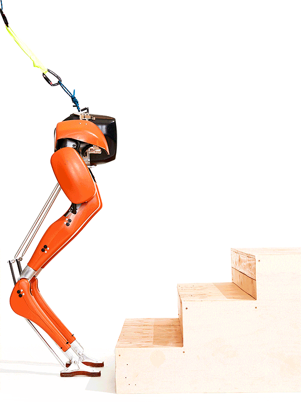

Hoy toca construir un robot capaz de subir peldaños y atravesar obstáculos.

La idea es que el robot sea capaz de atravesar distintos obstáculos.
A continuación, mostraremos un ejemplo de construcción de un sube peldaños.
Le añadimos el cableado y tendríamos terminado nuestro sube peldaños.
En este caso, la programación será muy sencilla, haciéndole avanzar a una velocidad baja.
Nuestro proyecto terminado funcionaría de la siguiente forma.